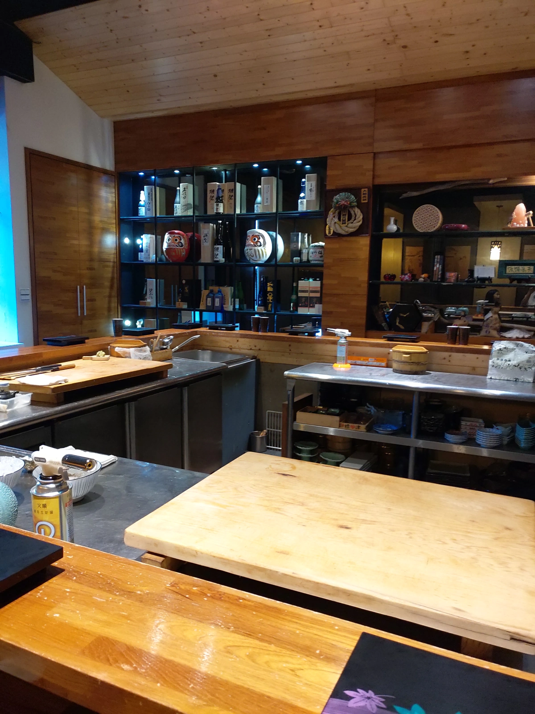
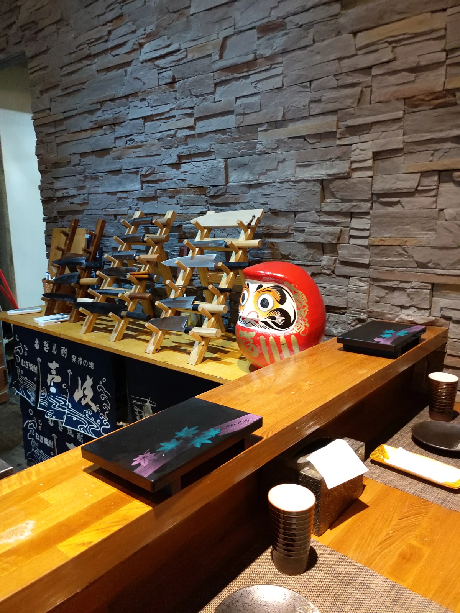
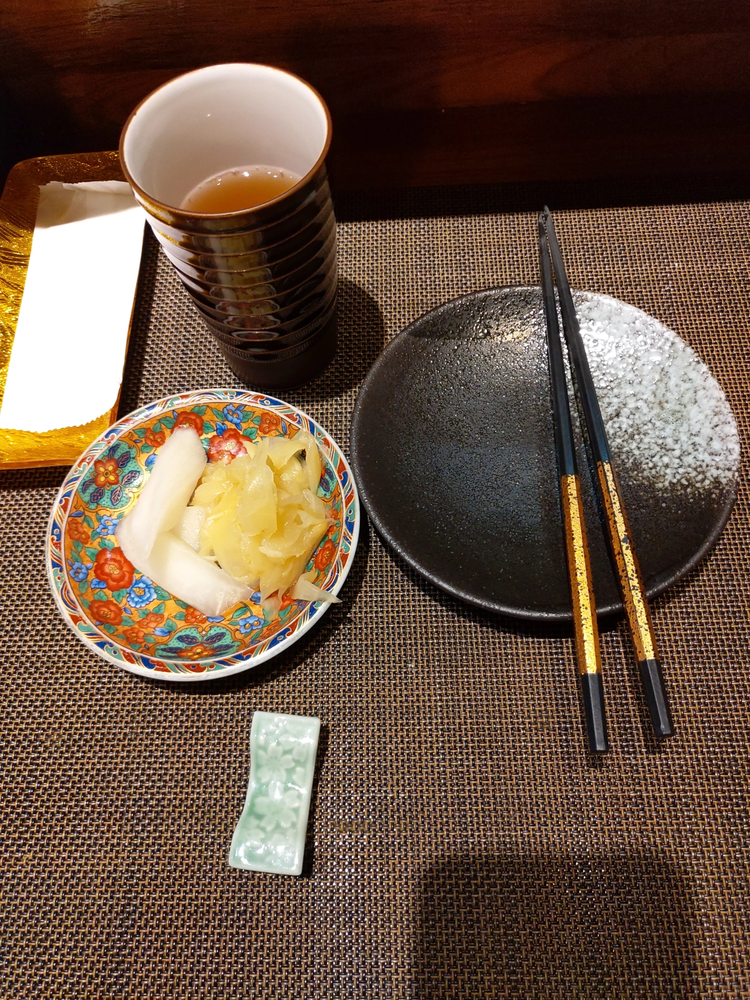
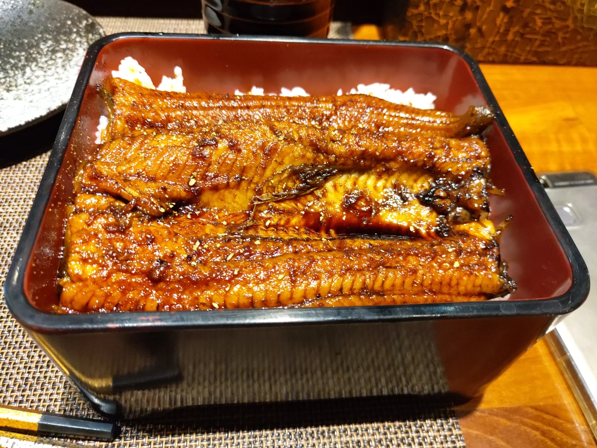
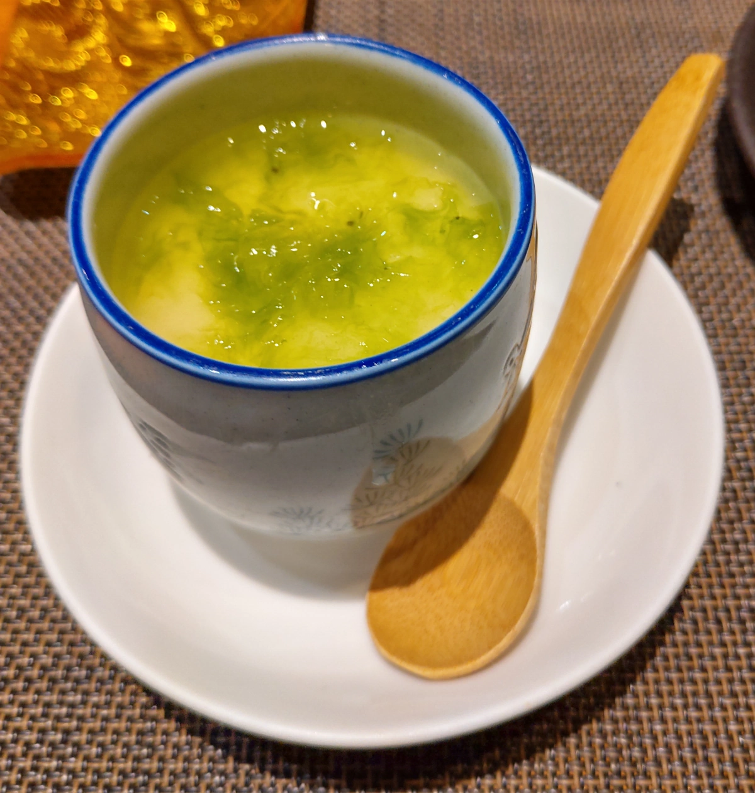
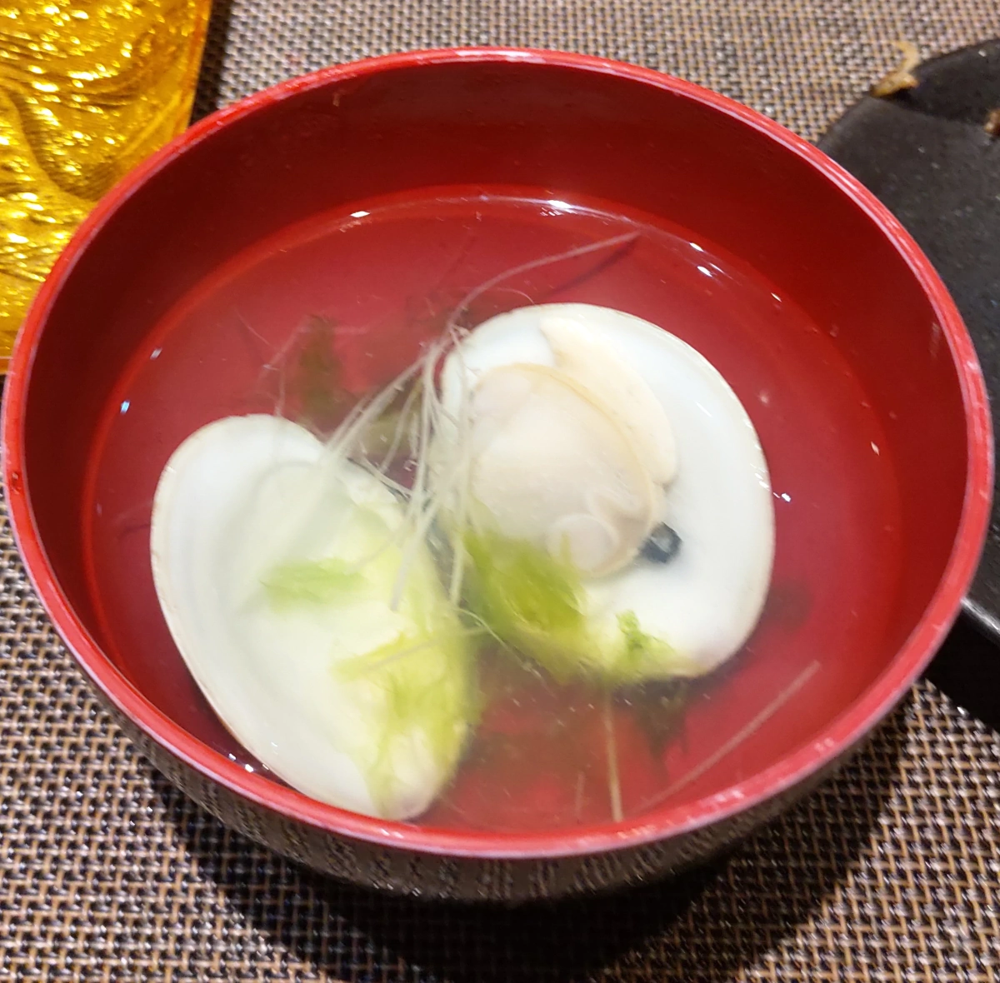
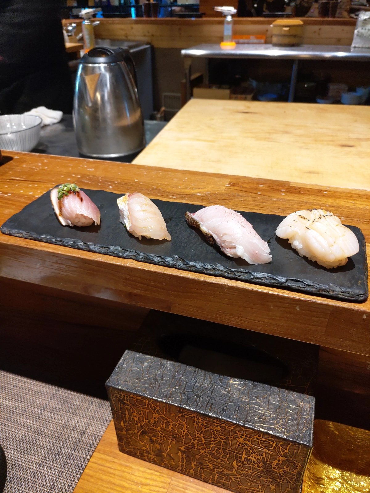
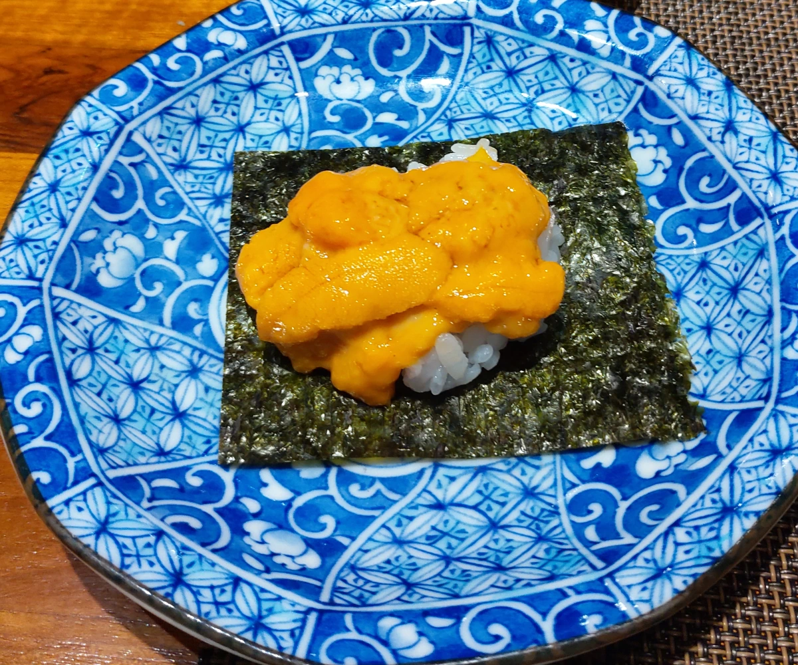
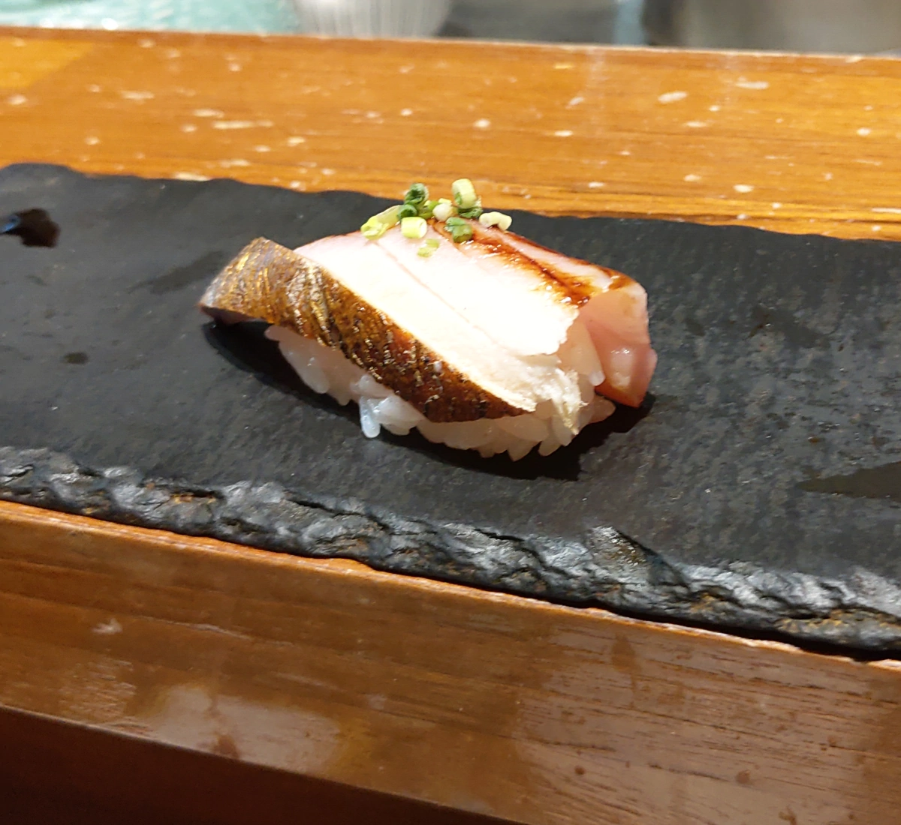

[桃園] 南木町 割烹料理
| 餐廳名稱: | 南木町 割烹料理 |
|---|---|
| 地 址: | 桃園市桃園區中寧街17號 |
| 營業時間: | 11:00–14:00 18:00–22:00 |
| 電 話: | 03 346 5280 |
要北上去台北，金牙豬吵著要吃 鰻魚飯。Google 了一下，選定在路途中點的 南木町割烹料理，這家雖然是要訂位的無菜單料理，但是中午有提供鰻魚飯等。 打電話訂位，店家說 鰻魚飯 要烤一陣子，須先訂餐，所以就訂兩份。剩下一份當場點。
開到附近，發現對街有個頂好超市，旁邊有收費停車場。那種私人停車場，土地利用到 很極致，車道窄小，車頭突出的車又一堆，算是很難停的停車場，不過也沒啥選擇了， 只能將就停一下。
室內裝潢還不錯，但是他的熟客可能都晚上來吧，中午時段，連我們只有兩組客人。  
熱茶、醃嫩薑、醃白蘿蔔 很快地提供了。 
唉，鰻魚飯 因為出發時就訂了，很快地送上來了。但這是今天失策的地方，鰻魚飯 根本是店家中午增加來客數的工具，雖然似乎是親自宰殺、親自炭烤。味道跟 專業鰻魚飯 店還是有點差距。而且刺沒挑乾淨，好幾處魚肉，都還是有刺。還是應該找一間 專業鰻魚飯店，雖然可能會貴很多。 
茶碗蒸，點鰻魚飯的才有。是還不錯，但是 竹北 鮨一路壽司 的 茶碗蒸 太驚人地好吃了，吃過鮨一路壽司的茶碗蒸後，其他家的茶碗蒸都不太看的上眼了。 
三人都有的蛤蠣湯，放一個大大的蛤蠣，湯頭鮮美，這個湯好喝。 
握壽司 是 今天的亮點，都很好吃。還好不是三人都點鰻魚飯，不然會嘔死。這個握壽司，成功扭轉鰻魚飯的印象。
握壽司套餐先上了八貫吧，實在記不起來哪一貫是什麼魚了。還有幾貫忘了拍照了，都好吃。 最左邊 應該是 煙燻鰹魚，最右邊是干貝。印象中還有 土魠魚握壽司。其他忘了。 煙燻鰹魚 有烤的風味，主廚說他們自己用稻草燻的，很好吃，覺得是今日最優。 土魠魚握壽司也是好吃，外邊不常見，相當有印象。 最後再單點幾貫有印象的，填一下還沒飽的肚子。 
便宜的握壽司套餐，沒有海膽，看主廚手藝不錯，放心加點了海膽握壽司，主廚先報價380元， 用的是日本進口的高級海膽，所以要這個錢。雖然有被另外兩人咬一口，我還是吃了大部分， 是新鮮迷人的海膽。 
這應該是加點的煙燻鰹魚握壽司，請老婆女王大人享用。 
這間店，還是乖乖地吃無菜單料理吧，鰻魚飯還是要去找專業店。主廚手藝佳，下次有機會， 來試試無菜單料理。